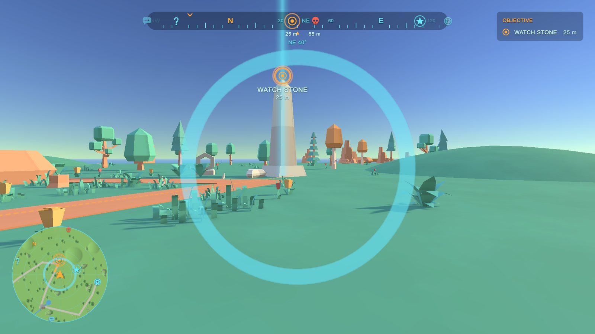
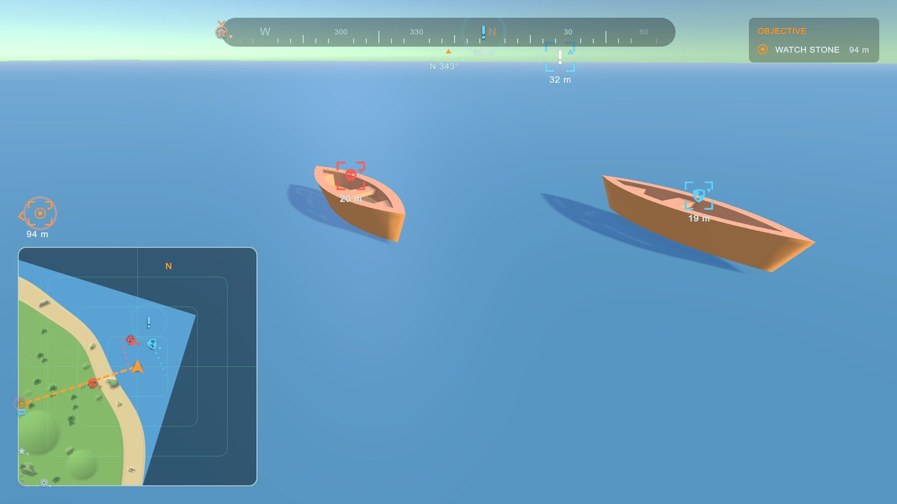

World scan and moving entities
World scan #


Add a Waypoint World Scan (GameObject > Bearing > World Scan puts it on the HUD's player). A scan sends a pulse out from the player: places it reaches are found as the pulse passes them. Undiscovered places are discovered (and play their reveal animation); places already known play a highlight.
| Setting | What it does |
|---|---|
| Radius, Speed | How far the pulse goes (metres) and how fast it spreads (metres per second). |
| Cooldown | Seconds before it can scan again. |
| Key | A key that scans (None = only from your code or a UnityEvent). |
| Line Of Sight | Only places the scan can see (Blocked By: the layers that block it). |
| Discover, Highlight Known | What it does to places it finds. |
| Categories | Only places in these categories (empty = all). |
| Sound, On Scan | A sound when it starts, and a UnityEvent. |
The look is the style's World scan section: a ring spreading from the middle of the screen, on the minimap and on the map (each can be off), its colour and size, and the highlight animation.
From code: scan.Scan() (from your own ability; false while cooling down), scan.CanScan, scan.CooldownLeft,
scan.Found, scan.Started, WaypointWorldScan.PlaceFound (scan, place, discovered), WaypointWorldScan.Current.
Moving entities #


Add a Waypoint Entity to anything that moves: enemies, allies, vehicles, mounts, NPCs, other players (GameObject > Bearing > Moving Entity, with the object selected). It adds a Waypoint shown on the minimap and map only.
| Setting | What it does |
|---|---|
| Faction | Neutral, Ally, Enemy, Vehicle, Player or Custom: its colour comes from the style's Moving entities section. |
| Show When | Always; In Range (Show Range metres); In Line Of Sight (in range and nothing in the way); When Spotted (only after your code calls Spot(), for Spotted Seconds). |
| Last Known Seconds | When it is lost, a faded marker stays where it was last seen for this long. |
| Smoothing | The icon glides after the entity (smooths jittery network positions). 0 = no smoothing. |
| Checks Per Second | How often the show rule is checked (lower is cheaper with many entities). |
| Trail, Trail Dots, Trail Spacing | A short trail of dots on the minimap. |
The icon turns to face the way the entity faces (style: Rotate Icons). Each split-screen player sees entities by their
own rule (one sees the wolf near them, the other doesn't). From code: entity.Spot(), entity.Heading,
WaypointEntity.All.